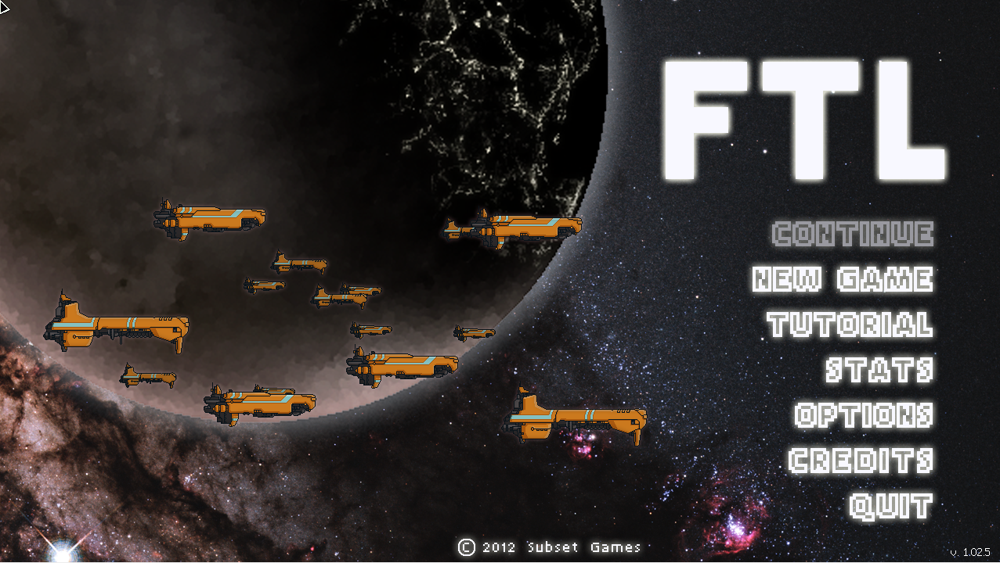
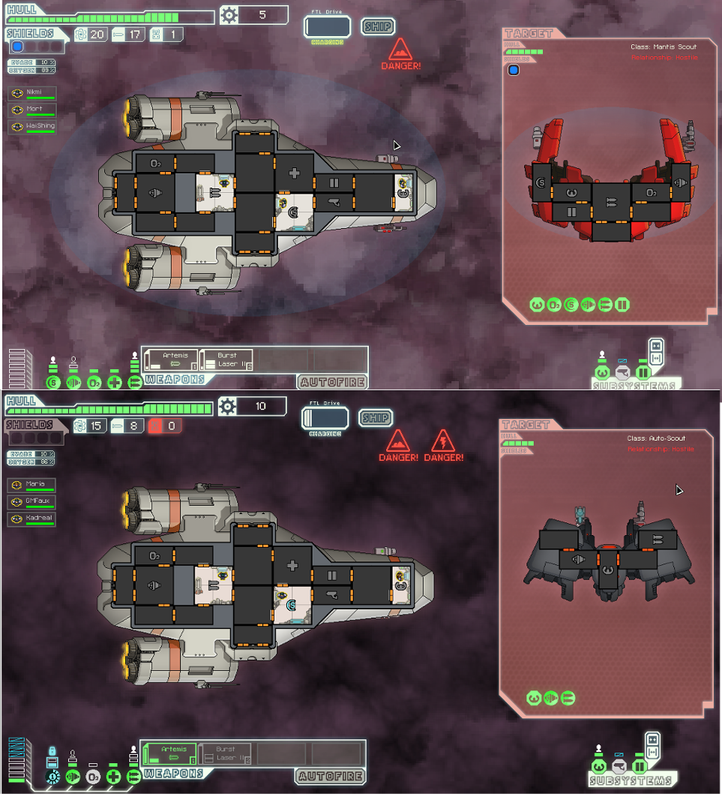

Faster Than Light:FTL
Uzayın derinliklerinde lazer silahlarla, Artoovari robotlarla ve farklı ırklardan personelinizle dolu geminizle seyahat etme fikri hoşunuza gidiyorsa FTL tam size göre.
Bir zamanlar TRT’de izlediğimiz Uzay Yolu’ndaki unutamadağım sahne ve diyaloğudur, “Işınla bizi Scoty”. Kaptan Kirk, o zamanlar bize sadece bilim kurgu olarak görünen, bugün ise 5 yaşındaki veletlerin elinde bile daha iyileri olan cep telefonuna benzer bir şey çıkarıp cebinden, kapağını açarak “Işınla bizi Scoty” derdi.
Bu enteresan oyunun yazısını okuyarak tanıdığım Açık Günlük sitesinin yazarlarından kuftikufti bu şekilde başlamış yazısına. Ben o kadar eski zamanları, kıl payı kaçırdım ne yazık ki. Uzay Yolu serilerini izledim ama. Günümüzde çevrilen, lazerlerin uçuştuğu, uzay gemilerinin patladığı, bol bilgisayar efektli filmlerin yanında oldukça basit kalıyor. Ama zamanına göre ilginç olduğunu, kuftikufti’nin “…o zamanlar bize sadece bilim kurgu olarak görünen, bugün ise 5 yaşındaki veletlerin elinde bile daha iyileri olan cep telefonuna benzer bir şey çıkarıp…” tabirinden anlayabiliyorum.
Haydi Birader, Bırak Şimdi Sinema Eleştirmenliğini de Oyuna Geç!
Bu tabir, aslında oyun için de oldukça uygun olmuş. Grafik ve animasyonlar oldukça basit yapılmış, hatta sanki bir Flash oyunu oynuyormuşçasına basit. Oyun, bir uzay savaş gemisini ve onun mürettebatını yönettiğimiz, simülasyon/strateji karışımı, hatta roguelike tarzı bile diyebileceğim bir oyun.
Uzak bir gelecek zamanda, ışıktan daha hızlı hareket edebilme olanağı sağlayan bir çeşit ışınlanma -ya da oyundaki tabirimiz ile “zıplama” (FTL) teknolojisi ile, çok uzak galaksilere ve sektörlere saniyeler içinde varabilmek artık mümkün olmuştur. Pek çok yeni evren, pek çok farklı yaşam formu ile karşılaşılmıştır. Ne var ki hepsi “Merhaba Dünyalı! Biz dostuz.” şeklinde bir karşılama yapmamıştır. İnsanlar ve diğer canlılar, silah güçlerini birleştirerek, Uzay Konfederasyonu adında bir filo oluşturup, düşman oluşumlardan kendilerini koruma yoluna gittiler. Ancak Konfederasyon’a karşı isyan edenler de kendi asi filolarını oluşturdular. Savaş sırasında Konfederasyon birlikleri, asi filosunun sancak gemisinin zayıf noktalarını ve nasıl yok edileceğine dair önemli bir istihbarat ele geçirirler. Ancak bu istihbarat, Konfederasyon’a oldukça pahalıya patlar. Pek çok Konfederasyon gemisi bu uğurda yok olur. Daha da kötüsü isyancı filo, tüm gücüyle bu verinin peşine düşmüştür. Bilgilerin bir an önce isyancı filosundan kaçırılarak, 8 sektör uzaklıkta olan Konfederasyon filosunun amiraline ulaştırılması gerekmektedir. Bu görev de bizim idaremizdeki gemiye verilir. Zaten her oyunda böyle olmaz mı? Giriş demosunda hep bir haltlar olur ve temizlemek de bize düşer!
Oyun, LGPL’nin de aralarında bulunduğu pek çok lisansa sahip unsurları barındırıyor. Platform bağımsız ve DRM-Free olan oyunun GNU/Linux sürümünü, adresinden , HumbleBundle‘dan ve Steam’den 10 Dolar karşılığında alabilirsiniz (Gerçi yılbaşı indirimi ile şu an 5 Dolar, ama muhtemelen siz bu yazıyı okurken, eski fiyatına dönecektir).
Oyunun asgari sistem gereksinimleri:
- Linux kernel 2.6.x
- Glibc 2.13
- 2.0 Pentium Dual-Core ya da dengi AMD işlemci
- OpenGL2.0 destekli nVidia 6000 veya RadeonX sınıfı 256 MB ekran kartı
- 175 MB boş disk alanı

Oyunu açtığınızda önümüze ana menü gelecek. Basit bir arayüz. İlk seçenek olan “Continue”, hâliyle oyuna kaldığımız yerden devam etmemizi sağlıyor ve ilk oyunda aktif olmuyor. Ancak burada bahsetmek istediğim, hata mı yoksa bilerek mi yapılmış anlayamamakla birlikte, bu seçeneği neredeyse kullanışsız hâle getiren bir kullanım şekli var. “Continue” seçeneği, sadece oyundan “Save+Quit” seçeneği ile çıkış yaptığınız takdirde aktif hâle geliyor. Yani ölmeniz, hangara geri dönmeniz ya da oyunu baştan başlatmanız durumunda “Quit” seçeneğiyle çıkış yaparsanız, daha önceden kaydetmiş olsanız bile, oyunu başlattığınızda bu seçenek pasif oluyor. Diyelim ki “Save+Quit” ile oyundan çıkıp, sonradan “Continue” ile devam ettiniz, yani bir çeşit “Save+Load” yaptınız. Kaldığınız yerden devam ettiniz ve öldünüz. Yapacağınız şey, ya ana menüye dönmek, ya hangara dönmek ya da oyundan çıkmak. Öldüğünüzde “save+quit” diyemiyorsunuz (Zaten deseniz de bir anlamı olmaz.). Ancak ölmeniz durumunda seçmek zorunda olduğunuz üç seçenek de kaydınızı siliyor. Yani sadece, oyun devam ederken kaydedip çıkarsanız sonraki oyunda kaldığınız yerden devam edebiliyorsunuz, ölürseniz kayıt siliniyor. Biraz sinir bozucu bir durum.
“New Game” yeni oyuna başlıyor ve bizi, ileriki paragraflarda ayrıntılı yazacağım, gemi ve mürettebatımızın özelliklerini ayarlayacağımız hangara götürüyor. “Tutorial” kısmı, gemi ve mürettebat kontrolü ile ilgili bir ders vererek bazı ipuçları da gösteriyor. İlk oynadığınızda mutlaka bir göz atın. “Stats” oyun ile ilgili ayrıntılı bir istatistik tablosu açar. “Options”, ses ve oynanış ayarlarınızı ve tam ekran/pencere seçeneklerini ayarlamanızı sağlar. Oyun standart olarak 1280*720 çözünürlüğe sahip ve bunu değiştiremiyoruz. Tam ekran modunda ise, ekrana uyduracak şekilde görüntü uzatılıyor. “Credits” oyunu yapan takımı tanıtırken, “Quit” oyunu kapatıyor.

Yeni oyun başlattığımızda gemi ve mürettebat için hangara gidiyoruz. Burada sol yukarıdaki “Rename” kısmından gemimizin adını değiştrebilir ya da hoşunuza gittiyse, orijinal adını tutabilirsiniz. Altındaki “Ship” kısmından istediğimizi bir gemiyi seçebiliyoruz. Ancak biz bir Federasyon kaptanı olduğumuzdan Federasyon savaş gemisi olan Kestrel ile oyuna başlıyoruz. Diğer gemileri alabilmemiz için, bazı görevleri yerine getirmek zorundayız. Diğer gemilerimiz şu şekilde:
Stealth Cruiser: Bu gemi, Engi ana sektöründe yapılıyor. Bu gemiyi alabilmek için Engi Homeworld sektöründen geçmeniz ve müretebatınızda en az bir tane Engi bulundurmanız gerekiyor. Engi sektöründeyken, Engi gemilerinin toplandığı bir atlama geçidini bulun. Burada, Engi mürettebatınızı filoya yollayın ve Engi filo kaptanının size verdiği iki görevi tamamlayın. Bu gemi açılacaktır.
Engi Cruiser: Bu gemiyi açabilmek için 5. sektöre gelmeniz yeterli.
Mantis Cruiser: Mantis sektöründeki efsane hırsız KazaaakplathKilik (Doğru yazmışımdır umarım adını:) bu gemiye sahip, onun elinden almanız gerekiyor. Ancak onunla karşılaştığınızda, geminizde bir ışınlama ünitesi olmalı ve MedBay ünitesi ikinci kademede olmalı (İlk kademedeki MedBay, sadece revire girmiş mürettebatı iyileştirebilirken; ikinci kademe MedBay, geminin herhangi bir yerindeki yaralı mürettebatı iyileştirebiliyor.). Hırsızla karşılaştığınızda saldırın ama gemisini yok etmeyin. Gövde hasarı kırmızıya gelince, gemisine mürettebatınızı ışınlayın. Fazla sayıda ve iyi dövüşen elemanlar seçmeniz iyi olur, zira hızlı olmanız gerekiyor. Yaralarından dolayı ölmeden önce hırsızı yakalayıp geminize geri ışınlanmanız gerek. Ancak hırsız, ışınlamadan sağ çıkamayacak kadar güçsüz, o yüzden hemen oracıkta tıbbi müdahale gerekiyor. Bunun için de ikinci kademe MedBay ünitesine sahip olmanız gerek. Eğer öldürmeden yakalayabilirseniz, gemiyi size veriyor. Ölürse bu gemiyi açamazsınız.
Federation Cruiser: Bu gemiye terfi etmeniz için, oyunu bitirmiş olmanız gerekiyor.
Slug Cruiser: Slug kontrolündeki bir Nebula sektörüne gitmeniz gerekiyor. Bu sektörde sensörleriniz çalışmayacaktır. Burada bazı gemiler yanınıza yanaşarak, stoklarını sizinkilerle değişmek isteyeceklerdir. Burada, Anti-Bio Beam denilen bir silahı taşıyan gemiyi bulun ve bunu isteyin. Karşılığında sizden bilgi isteyecek. Geminin istediği noktaya zıplayarak, buradaki gemiye saldırın. Gemi zıplayarak kaçmaya çalışacak. Zıplama yapmadan önce, gemi mürettebatının tümünü öldürebilirseniz Slug Cruiser’ı alabilirsiniz.
Zoltan Cruiser: Zoltan sektörüne girdiğinizde, bu sektörede silahsız bir Zoltan Transporter gemisinin olduğu noktayı bulun ve sizden istediği görevi kabul edin. Görev noktasına zıpladığınız zaman, bir isyancı gemisi “bu sefer kaçamayacaksın!” diyerek üzerinize saldıracak. Karşı saldırıya geçmeyin ve “Şunu konuşarak, savaşsız hâlledelim!” şeklindeki cevabı seçin. Gemi durup teklifinizi kabul ettiği zaman, bu gemi açılacak.
Bu gemilerin yanında bir Rock Cruiser ve esrarengiz bir gemi daha var. Ne yazık ki ben bu iki gemiyi bulamadım. Tüm gemilerimizin bir de ikinci ve üst modeli var. Bu modeli açabilmek için, bu gemilerin üç başarımından en az ikisini başarmış olmanız gerekiyor.
Sol alttaki “Crew” kısmından ise, mürettebat üyelerimizin cinsiyetlerini ve isimlerini değiştirebiliyoruz. Buradan mürettebat sayımızı ya da mürettebat ırkını değiştiremiyoruz. Orta kısımda ise gemimizde kurulu olan üniteleri ve bunların seviyelerini görebiliyoruz. Hemen altında ise silahlarımızı ve -varsa- gemimizde bulunan droneları (çeşitli işler yapan robotlar) görebiliyoruz. Bu kısımların güncellemelerini ve yeni ünite kurulumunu oyun içinde yapabiliyoruz. Yani hangar kısmında bunlar da sadece bilgilendirme amaçlı. Sağ altta ise gemimizde bulunan mekanik aksamları görebiliyoruz. Sağ yukarıdan da oyunun zorluk derecesini seçip “Start” dediğimiz zaman kendimizi uzayda buluyoruz.

Gemi kontrollerimiz de oldukça basit. Sol üst köşede gemimizin gövde hasar göstergesi var. Kısaca geminin yaşam gücü diyebiliriz. Savaşta isabet aldıkça, meteorlar tarafından vuruldukça ya da bir yıldıza fazla yaklaşmışsak, yıldız patlamalarının ortasında kaldıkça bu gösterge azalır, biterse gemimiz parçalara ayrılır ve oyun biter. Gövde hasarınızı, tüccarların bulunduğu noktalara vardığınızda onartabilirsiniz ya da drone kontrol üniteniz ve bir gövde onarım robotunuz (hull repair drone) varsa, bu robotu her fırlatışta 3-5 puan kadar gövde hasarınız onarılır. Burada siz küçük bir de ipucu vereyim. Eğer geminizde bir de drone toplama kolu mekanik aksamı varsa -ki bu kol normalde zıplama yaptığınızda, kaybolan drone’u yakalamak için kullanılır- tamir robotunu bıraktıktan sonra, gövde hasarı 2 puan tamir olduğu zaman zıplama yapın. Bu kol dışarıdaki robotu yakalayacak ve bu şekilde zıplama başına 2 puan gövde hasarınızı bedavaya onarabileceksiniz.
Gövde hasarının altında gemimizin kalkanları var. İlk kademe kalkanla başlayıp dördüncü kademeye kadar kalkanlarımızı güçlendirebiliyoruz. Ancak kalkan güçlendirmesinin bir kademe artması için, iki güçlendirme yapmamız gerek. Yani kalkanın her seviyesi, geminin jeneratöründen iki birim enerji çekiyor. Kalkanlarımızın hemen sağında ise soldan sırasıyla, yakıt, roket ve robot parçası sayımızı gösteren göstergelerimiz var. Yakıt, zıplama yapmamız için gerekli. Her zıplamada bir birim yakıt gider. Eğer yakıtınız biterse, olduğunuz noktada çakılır kalırsınız. Bu olursa, yanınızdan bir geminin geçip de size yakıt vermesini beklemek zorunda kalırsınız. Elbette önce bu geminin geleceği garanti değil. Savunmasız durumdayken, bir korsan ya da köleci gemisinin saldırısına da uğrayabilirsiniz ya da daha kötüsü arkanızdan gelen isyancı filosu size yetişebilir. Tüccar noktalarından, başardığınız görevlerin ödülü olarak ya da yakaladığınız gemilerden yakıt bulabilirsiniz. Hemen sağında ise füze sayımızı görüyoruz. Füze ve bomba tipi silahlarımızı ateşleyebilmek için gemimizde füze olması gerek. Aksi takdirde bu silahlarınızı kullanamazsıınız. Hemen sağında ise robot parçalarımızı gösteren bir gösterge var. Uzaya; savunma, saldırı ya da tamir robotu yolladığınızda, robot parçalarınız azalır. Sıfırlanırsa, geminizin dışına robot yollayamazsınız.
Kalkanların göstergesinin hemen altında ise, kaçınma (evade) yüzdemizi görebiliyoruz. Buradaki rakam ne kadar yüksek olursa, düşman ateşinden kaçma şansımız o kadar yüksek olur. Bu kısmı, motorlarımızın gücünü artırmak, motorlara bir personel koymak, dümenin kademesini artırmak suretiyle yükseltebiliriz. Hemen altında ise gemimizin oksijen seviyesi var. Gemimize oksijen sağlayan yaşam destek ünitesi, düşman ateşi veya bir meteorun isabeti ya da yangın çıkması sonucu hasar görürse, oksijen seviyesi, her saniyede %1 azalır. Oksijen biterse, mürettebatınız ölür. Yine dışarı açılan bir kapıyı açmanız ya da iç gövdede oluşacak bir delik, odadaki oksijeni azaltmaya başlayacaktır. Oksijen seviyesi normal olan oda, berrak ya da hafif bir ten renginde olur. Kırmızı renkli ise, oksijen seviyesi düşük demektir. Bu odadaki oksijen seviyesi normale dönmeden, buraya personel sokarsanız, gücü giderek azalmaya başlayacaktır. Eğer odanın rengi koyu kırmızı ve turuncu çerçeve içindeyse, odadaki oksijen tamamen bitmiş demektir. Buraya personel sokarsanız, çok kısa sürede ölecektir. Oksijen seviyesi, iç gövdede bir delik yoksa, dışarı açılan tüm kapılar kapalıysa, yangın yoksa ve yaşam destek üniteniz aktifse, yavaş yavaş normale dönecektir.
Hemen altında ise mürettebatımızı görüyoruz. Burada elemanlarımızın türünü, cinsiyetini, adını ve gücünü görebiliyoruz. İmlecimizi bir elemanın üzerinde beklettiğimzde, yanda açılan bir kutucuk içinde, elemanımızın hangi konuda ne kadar deneyim sahibi olduğunu görüyoruz. En başta hepsi sıfır oluyor. Elemanımız; gemi üniteleri, tamir ya da dövüş kısımlarında ne kadar fazla kalırsa o konuda o kadar deneyim kazanır ve o elemanı deneyimli olduğu alanda kullanırsanız, deneyimsiz bir personele göre o işi daha hızlı ve ustalıklı yapacaktır. Buradaki bir elemana tıklarsanız, o elemanı seçmiş olursunuz. Sağ tıkla istediğiniz yere götürebilirsiniz. Elemanınız, arızanın olduğu bir odaya girdiğinde otomatikman oradaki arızayı tamir edecek, yangını söndürmeye çalışacaktır. Yine başına geçebileceği bir ünitenin bulunduğu odaya girmişse, o üniteyi kontrol etmeye başlayacaktır. Farenizin sol tuşuna basılı tutup bir kare çizerek birden fazla personeli de seçebilirsiniz.
Sol alt kısımda ise gemimizin sistem gücünü ve gemimizdeki kurulu üniteleri görebiliyoruz. En soldaki bar, gemimizin enerjisini yani jeneratörlerin ürettiği gücü gösteriyor. Sağ alttaki üç altsistem üniteleri hariç, diğer tüm gemi ünitelerimiz çalışabilmek için elektrik gücüne ihtiyaç duyar. İleriki paragraflarda ayrıntılı açıklayacağım güncelleme ile bu enerjinizi artırabilirsiniz. Gemimizdeki her ünite, -kalkanlar dışında- kademe başına bu enerjinizden bir çizgi götürürler. Buradan ayrıca, geminizin ünitelerini de kontrol edebilirsiniz. Bir üniteyi seçip sol fare tuşu ile o üniteye giden enerjiyi artırabilirsiniz. Sağ fare tuşu ise enerjiyi düşürür. Yani bir üniteyi tam güçte ya da düşük güçte çalıştırabilir ya da tamamen devre dışı bırakabilirsiniz. Gemimizin üniteleri, en soldan başlayacak olursak:

1- Dümen (Piloting): Bir altsistemdir. Gemimizin enerjisini harcamaz, ancak burada mutlaka bir personel görevlendirmeniz gerekir. Azami 3. kademeye kadar yükseltebilirsiniz. Bu ünitenin kademesi ve buradaki personelin pilotluk deneyimi, çatışma esnasında vurulmanızı ya da meteor fırtınası altında meteorların size çarpma şansını azaltacaktır.
2- Kalkanlar (Shields): Gemimiz, standart olarak birinci kademe enerji kalkanı ile başlar. Kalkanlarımız, bir seviye artmak için iki enerji barı ister. Kalkanları ister bilgisayara bırakır, isterseniz bir personel görevlendirebilirsiniz. Kalkanlar, düşman ateşi ve gelen meteorlardan geminizi korur. Lazer ışınları ve bazı füzeleri engeller. Hızla tekrar şarj olur. Kademesi ne kadar yüksekse, o sayıda direkt atışı karşılayabilir. Eğer bir personel tarafından kontrol ediliyorsa, kalkanların şarj süresi kısalacaktır. Ancak burada dikkat etmeniz gereken, plazma saldırılarının kalkanlarınızı belli bir süre kilitleyebilmeleridir. Eğer plazma silahı ile vurulursanız kalkanlarınız bir süre etkisiz kalacaktır. Kalkanlar, en fazla 4. kademeye kadar artırılabilir.
3- Kapı Kontrol (Doors): Bu da bir altsistemdir. Gemi enerjinizi harcamaz. Gemi içindeki kapılarınız, personel yanına geldiği zaman açılır ve kapanır. Ancak kapıları, üzerlerine tıklayarak uzaktan da açıp kapatabilirsiniz. En fazla 3. kademeye yükseltebilirsiniz. İkinci kademe kapılar, yangını geçirmez olur. Son kademede ise geminize giren düşman personele açılmaz ve hava geçirmez olur. Mesela, dışarı açılan bir odaya giren düşman personeli, dış kapıyı açarak o odada boğulup ölmelerini sağlayabilirsiniz. Yine sağ altta kapılarınızın tümü birden açmanızı ve kapamanızı sağlayan kapı kontrol butonları var.
4-Işınlayıcı (Teleporter): Personelimizi -bulunduğu odaya göre 2 ya da 4 kişiyi birden- düşman gemisine ışınlamamızı sağlar. Elbette düşman geminin personeli, sizin gönderdiğiniz adamlara direnecek, onları öldürmeye çalışacaklardır. Ayrıca robot kontrol ünitesi ve bir saldırı robotunuzu varsan onu da düşman gemisine ışınlayabilirsiniz. Robotlar, mürettebat elemanlarınızdan daha ölümcüldürler. Bir gemiyi havaya uçurmadan ele geçirebilirseniz elde edeceğiniz ganimet artacaktır. Yine yukarıda anlattığım gibi, oyundaki kilitli gemileri açabilmek için gemiyi uçurmadan ele geçirmek zorunda kalıyorsunuz. Yalnız dikkat, aynı şeyi düşman da yapabilir. Kendi geminizde düşman robotlarını ya da düşman personelinden elemanları da bulabilirsiniz. Işınlayıcı, azami 3. kademeye kadar arttırılır. Kademe artışı, ışınlama ünitesinin şarj süresini kısaltır.
5- Görünmezlik (Cloak): Kademesine göre artan bir süreliğine geminizi görünmez yapar. Bu üniteye de bir personel görevlendirebilirsiniz. Bu ünite siz istediğiniz zaman aktif olur. Standart olarak kaçınma yüzdenizi %60 yapar, ancak deneyimli bir personel ve yüksek kademedeki ünite bu oranı %100’e çıkarır. Bu da düşman gemisinin sizi vuramaması demektir. Düşman silahlarını ateşlediği an görünmez olmanız durmunda silahlar ıskalayacak ve ikinci atış gecikecektir.
6- Alıcılar (Sensors): Altsistemdir. Alıcılarınız olmadan, geminizin odalarının sadece personelin bulunduğu kısımları görebilirsiniz. Diğer odalar görünmez. Hâliyle buradaki hasarı, yangını ya da geminize sızmış düşman personeli göremezsiniz. Bu altsistem, azami 3. kademeye kadar yükseltilebilir. Birinci kademe alıcılar geminizi gösterir. İkinci kademe alıcılar düşman gemisinin de odalarını ve mürettebatını görmenizi sağlar. Üçüncü kademe ise düşman gemisinin enerjisini görmemizi sağlar. Eğer bir Nebula bulutu içine girmişseniz alıcılarınız çalışmaz.
7- Revir (MedBay): Yaralı mürettebatımızın iyileştirildiği ünite. Azami 3. kademeye kadar yükseltilebilir. İlk kademede, revirin içindeki personeli iyileştirebilir. İkinci kademede ise, tüm gemi içindeki yaralı personeli, olduğu yerde iyileştirebilir. Son kademede ise iyileştirme hızı artar. Öyle ki oksijeni tamamen tükenmiş odadaki personeli bile hayatta tutabilir.
8- Motorlar (Engines): Gemimizin hareket etmesini sağlayan kısımdır motorlar. Buraya bir elemanı koymanız, kaçınma yüzdenizi artıracaktır. 8. kademeye kadar artırılabilen bu ünite, kademe atladıkça “zıplama” sürücülerinin şarj süresini kısaltacak ve kaçınma yüzdenizi yükseltecektir.
9- Yaşam Destek (Oxygen): Gemi personelinin uzayda gemi içinde nefes almasını sağlayan ünite. Azami 3. kademeye kadar yükseltilebilen bu ünitenin kademesi arttıkça gemi içindeki oksijeni yenileme hızı artıyor.
10- Robot Kontrol (Drone Control): Geminizin robotlarını kontrol etmenizi sağlayan ünitedir. Azami 8. kademeye kadar yükselebilen bu ünite, kademe atladıkça daha fazla robotu kontrol edebilme yeteneği kazanır. Robotlarmızı 3 kategoride toplayabiliriz:
- Saldırı Robotları: İki tip saldırı robotumuz (drone) var. İlki, savaş sırasında uzaya fırlatıp düşman gemisi etrafında dönerek, sürekli ona ateş eden robotlar. Kalkanların baş belası robotlardır. İkinci tip saldırı robotu ise ışınlayıcı ile düşman gemisine yollanıp gemi içindeki mürettebatı yok eden robotlardır.
- Savunma Robotları: Bunlar da iki tiptir. Uzaya gönderebileceğimiz savunma robotları, gemimizin etrafında dönerek, kademelerine göre, düşman gemisinin size yolladığı füze ve lazer ateşini keserler. İkinci tip savunma robotu ise gemi içinde dolaşarak, geminize sızmış düşman personelini bulup yok eder.
- Tamir Robotları: Gövde tamir ve iç tamir robotları olarak ikiye ayrılırlar. Gövde tamir robotu, dış gövde hasarınızı onarır. Kademesine göre 3-5 nokta hasarı onarıp yok olur. İç sistem onarım robotu ise, gemi içinde otomatik olarak, hasarlı ya da yangın çıkmış odaya giderek hasara müdahale eder.
Robotlar için, robot kontrol ünitesi dışında, bu robotların şemalarına sahip olmanız gerekiyor. Bunları vurduğunuz gemilerden, yardım ettiğiniz gemilerden ödül olarak ya da tüccarlardan satın alarak ediniyorsunuz. İç sistem robotları başka şey istemezken, uzaya yolladığınız robotlar, kademelerine göre, hemen roket sayınızın yanında gösterilen kısımdaki robot parçalarınızı (drone parts) azaltıyorlar. Eğer robot parçanız biterse uzaya robot yollayamazsınız.
Gemi ünitelerimizin yanında, ekranın alt ortasında yer alan bir de silah kontrol ünitemiz var. Bu ünite, azami 8 kademeye kadar artırılabiliyor. Her kademe artışı bize, daha fazla ya da daha güçlü silahları gemimize takabilme imkânı sağlıyor. Silah kontrol ünitesine bir personel yerleştirirseniz, silah şarj zamanı 2/3 oranında kısalacaktır. Oyunda üç silah tipi var. Lazer silahları, füze tipi silahlar ve plazma silahları. Her üç silah tipi altında, farklı özelliklere sahip oldukça fazla silah var. Ayrıca bunların daha güçlü tipleri de mevcut. Bunları ele geçirdiğiniz gemilerden ya da tüccarlardan alabiliyorsunuz. Ancak bazı temel özellikleri var. Genelde, füze tipi silahlar, kalkanları geçebiliyor, ancak savunma robotlarına çok kolay av oluyorlar. Genel hasara yönelik olan füze tipi silahların, yangın bombası gibi, sadece düşman mürettebata yönelik olanları da var. Yine bu tip silahlar, ürettiğiniz enerjinin yanında, geminizdeki füze sayısı ile de kısıtlı. Füzeleriniz biterse bu silahları kullanamıyorsunuz.
Lazer silahları ise, cephane sınırı olmaksızın ateş edebiliyorlar. Ancak kalkanlara çarpınca kesiliyorlar. Yani bu tip silahların gemiye ulaşması için arada kalkan olmaması gerekiyor. Genelde de lazer tipi silahların şarjı, füze tipi silahlardan uzun sürüyor. Yine güçlü genel hasar veren lazer yanında, “beam” denilen tipte, ünite hasarı veren lazer silahları da var. Bu lazer, vurduğu odadaki üniteye hasar verirken, geminin gövdesine hasar vermez.
Plazma silahları ise hızlı şarj olur, seri ateş eder ve kalkanlardan rahatlıkla geçer. Ancak bu silah tipi de düşman gemisine ya da mürettebata herhangi bir fiziksel hasar veremez. Gücüne göre artan bir süre için, isabet ettiği düşman gemi ünitesinin kilitlenip görevini yapamaz hâle gelmesini sağlar. Boş bir odaya isabet etmesi durumunda tamamen etkisizdir.
Silah sistemi için ayırdığınız enerjiyi, silah slotlarınıza koyduğunuz silahları aktive ederek kullanıyorsunuz. Cephanesi biten silah ise otomatikman devre dışı kalıyor.
İlk paragraflarda belirttiğimiz üzere, FTL teknolojisi insanları, evrende yaşayan başka ırklarla da tanıştırmıştı. Hâliyle bu da oyunda, mürettebatımızda insan ırkından farklı personeli de bulundurabilmemiz biçiminde ortaya çıkıyor. Mürettebatımıza yeni personeli, rastgele görevlerimizde kurtardığımız gemilerden, keşif yaptığımız gezegenlerden, kölecilerden sağlayabileceğimiz gibi, bazı tücarların olduğu noktalardan da mürettebatımıza katılmaları için belli bir kredi karşılığında kiralayabiliyoruz. Personelimizi; girdiğimiz çatışmalar sırasında, zordaki gemilere yardım etmeye çalışırken, indiğimiz bir gezegende herhangi bir aksilik (kaza, hastalık gibi…) ya da gemide çıkacak bir yangın sonucu kaybedebiliyoruz. Bu ırklar:
Human: Bildiğimiz insan ırkı. Bu ırktan personel, herhangi bir özelliğe sahip olmadığı gibi, herhangi bir zayıflığa da sahip değildir. Bu ırktan personeli, oldukça ucuza kiralayabilirsiniz. Bu ırk kadın – erkek seçeneğine sahip tek ırktır.
Engi: Yarı mekanik, yarı canlı olan bu ırk, tamir ve yangın söndürme işlerinde diğer tüm ırklara göre iki kat daha hızlı çalışıyor. Ancak iş dövüşmeye geldiği zaman, yarı yarıya hasar verebiliyor. Bir Engi mürettebatınızı, düşman gemisine ışınlamayın ya da sizin geminize ışınlanmış düşman personeli ile karşı karşıya getirmeyin.
Mantis: Savaşçı bir ırk. Engi’nin tersi diyebiliriz. Düşman gemisine ışınlayabilir ya da sizin geminize ışınlanmış düşman personelini yok etmek için kullanabilirsiniz. Ama tamire ya da bir üniteyi kullandırtmaya kalkarsanız, vay hâlinize. Bu ırk, iki kat saldırı hasarı verir ve diğer ırklara göre çok daha hızlı hareket eder. Tamir süresi ise iki kat uzundur.
Rockmen: Taş gibi sert ve kalın bir deriye sahip bu ırk, Mantis’ten sonra yakın dövüşte kullanabileceğiniz en uygun ırktır. Yaşam gücü diğer tüm ırkların iki katı olan Rockmen, ateşten de hiçbir şekilde etkilenmez. Ancak oyundaki en yavaş (robotlardan bile daha yavaş) ırktır. Rockmen, Mantis dışındaki tüm ırkları teke tek dövüşte yenebilir. Ayrıca yangın çıkmış odalara bu ünite ile personel hiç zarar görmeden müdahale edebilir, aynı şekilde yangın çıkmış başka gemilere yardım etmekte kullanabilirsiniz. Ama geminin bir ucundan diğerine, neredeyse çatışma bittiğinde varabiliyor.
Zoltan: Engi ırkının müttefiki olan Zoltan ırkı, bir çeşit enerjiden oluşmaktadır. Eğer ünitelerden birine bir Zoltan yerleştirirseniz, o ünite ekstradan bir enerji barı kazanmış olacaktır. Geminizin enerjisi sıfır olsa bile, bu personelin kullandığı ünite hep bir enerji barına sahip olacak, yani her koşulda en düşük seviyede de olsa, çalışmaya devam edecektir. Ancak yaşam enerjisi en düşük olan ırktır Zoltan. Çabuk ölüverir.
Slugs: İnsan ırkına benziyor bu ırk. Ancak görünüşü ve sezgi yeteneği dışında. Slugs personeli, alıcılarınız çalışmıyorsa bile bulunduğu odanın komşusu olan odaları görebilir. Hem sizin hem de düşman gemisinde bulunan personeli de hissedebilir (Oyunda personelin olduğu yer kırmızı nokta olarak belirir.). Bunlar dışında tüm özellikleri, insan ırkı ile aynıdır.
Mürettebatımız da bu şekilde. Bir İK düsturu vardı, doğru işe uygun eleman mıydı?! Neyse canım, anladınız işte. Mantis’i silah kontrolüne ya da kalkanlara geçirip de Zoltan’ı düşman gemisine ışınlamaya kalkmayın yani.

Ortada, oyuna da adını veren fonksiyon olan zıplama fonksiyonu (FTL Drive) var. Motor ünitemizin kademesine bağlı olarak süresi değişen bir şarj zamanına sahip FTL, şarj esnasında “charging” yazısı ile birlikte, şarj durumunu gösterir. Dolduğu zamansa “Jump” yazısına dönüşür. FTL’yi kullanabilmeniz için, motorlarınızın ve dümen sisteminizin aktif olması ve dümende mutlaka bir personelin bulunması gerekir. Elbette geminizin yakıtının da olması gerekiyor. FTL şarj ettiği zaman, az önce belirttiğim şartlar da tamamsa, istediğiniz zaman bir başka noktaya zıplayabilirsiniz. Bir savaşın ya da görevin ortasında olmanız önemli değil. Yani sıkıştığınız zaman kaçmak için kullanabilirsiniz. Zaten düşman gemileri güçleri azalınca ve FTL şarjı için yeterli bir süre geçmişse, onlar da bu yöntemi kullanacaklardır.
FTL zıplaması yapmak istediğinizde, önünüze yukarıdaki sektör haritası gelecek. Buradaki dörtgen noktalar, zıplama ile gideceğiniz yerleri belirtir. Geminizin çevresinde dönüp durduğu nokta, bulunduğunuz mevcut noktayı gösterir. Bu noktadan, komşu noktalara FTL ile zıplayarak ilerleyebilirsiniz. Zaten amacınız da, bulunduğunuz noktadan sektörü geçerek, üzerinde “Exit” yazılı noktaya ulaşmak. Buraya ulaştığınız zaman, bir sonraki sektöre geçeceğiniz zıplama noktasına varmışsınız demektir. Bu noktadaki görevi geçip (varsa elbette) FTL ile zıplama yaptığınızda, ekranın sağında “Next Sector” yazısı göreceksiniz. Buraya tıkladığınızda, önünüze sektör seçme ekranı gelecek ve sonraki sektöre zıplayacaksınız.

Sektör içindeki sarı dörtgenler gitmediğiniz, koyu mavi olanlarsa gittiğiniz noktaları gösterir. Daha önceden ziyaret ettiğiniz noktalara geri dönebilirsiniz, ancak sadece yakıt israfı olur bu. Bazı noktaların üzerlerinde “distress” yazısı göreceksiniz. Bu, o noktadan bir imdat çağrısı aldığınızı gösterir. Gidip gitmemek elbette size kalmış. Buralarda muhtemelen yakıtı bitmiş gemiler, bir korsan ya da asilerin saldırısına uğramış ve yardım isteyen bir gemi ile karşılaşacaksınız. Ancak bazen tuzak da olabiliyor. Bazı noktaların üzerinde ise “Store” yazısı göreceksiniz. Buralarda da geminizi tamir ettirip yeni silah, personel ya da robotlar alabileceğiniz ya da istemediğiniz silah ve robotları satabileceğiniz (Üzgünüm, personeli satamıyorsunuz.) veya geminize yeni üniteler ekletebileceğiniz tüccarların bulunduğu noktalar anlamına gelir.
Sektör haritasında mor alanların içinde noktalarla da karşılaşabilirsiniz. Bu, Nebula içinde kalmış noktaları gösterir. Oraya gitmeniz durumunda alıcılarınız çalışmaz. Bir de soldan yaklaşan kırmızı bölge var. O da işte arkanızdan gelen isyancı filosunun mesafesini gösteriyor. O bölge sizi yakalarsa, muhtemelen oyun biter. Oradan kurtulma imkânınız çok ama çok az çünkü.
FTL sürücüsünün yanındaki “Ship” butonu ise, geminizin özelliklerini açar ve krediniz doğrultusunda bunları güçlendirebilirsiniz. Güçlendirme, geminize kurulu olan üniteleri ve geminizin jeneratör gücünü kapsar. Yani robotlarınızı ve silahlarınızı burada güçlendiremezsiniz. Daha güçlülerini bulmak, tüccarlardan almak ya da yakaladığınız gemilerden ele geçirmek durumdasınız.
FTL sürücüsünün solunda ise krediniz görünür. Oyundaki para ya da kaynak diyebiliriz. Tüm güncellemeler, satın almalar bu kredi ile yapılabilir.

Oyun, rastlantısallık üzerine kurulmuş. Sadece sekiz sektör sayımız sabit. Bir sektör içindeki noktaların sayısı ve o noktalarda karşılaşacağımız olaylar rastgele karşınıza çıkıyor. Geminizi güçlendirmek için mümkün mertebe çok yer gezinip fazlaca görev yapmaya çalışın. Ancak fazla oyalanırsanız da arkanızdaki asi filosunun sizi yakalayacağını unutmayın.
Grafik ve animasyonlar oldukça basit ve kuftikufti‘nin belirttiği gibi arka plan resimlerinin çözünürlüğü düşük. Ama fotoğraflar NASA’ya ait. Yani gerçek uzay görüntüleri.
Ancak bu düşük çözünürlük, topluluğun da gözüne batmış olmalı ki bu oyunun oyuncuları bir HRP (High Resolution Pack) yayımlamışlar. Arka plandaki düşük çözünürlüklü grafikleri, yüksek kalitede olanlarla değiştiriyor. Bu yamayı da oyuna şu şekilde uyguluyoruz:
İlk olarak, bu adresten Gronaks Mod Manager uygulamasını indirmeniz gerekiyor. Python ile yazılmış bir yama uygulayıcısı bu. Sonra bu adresten FTL HRP’yi indirmeniz gerekiyor. Oyundaki düşük çöznürlüklü arka plan resimlerinin yüksek çözünürlüklü olanlarını barındıran bir arşiv dosyası.
Gronaks Mod Manager’ın .tar.gz uzantılı arşivini açarak, içindeki tüm dizin ve dosyaları /FTL/data dizini altına taşıyın (modman.exe dosyasını taşımasanız da olur, onunla bir işimiz yok.). Ancak sadece içeriği atın. “Gronaks Mod Manager” isimli dizinin kendisini değil. Yani işlem sonunda bu dizin boş kalacaktır (Taşımadıysanız sadece modman.exe dosyası içinde olacak.), silebilirsiniz.
Tkinter (python-tk paketi) sisteminizde kurulu olmalı. Yazılım Merkezi’nden kontrol edin, kurulu değilse kurun.
/FTL/data/src dizini altındaki tüm dosyaları bir üst dizine (/FTL/data) taşıyın. Bu dizinde FTL’nin çalıştırılabilir dosyasının olduğundan emin olun. /FTL/data/src dizini boşalmış olmalı. Onunla da bir işimiz kalmadı, silebilirsiniz.
İndirdiğiniz, Highres Backgrounds V1.0.ftl dosysını, yani HRP arşiv dosyasını, /FTL/data/mods dizini altına atın.
FTL/data dizini altına giderek burada konsolu açın ve python main.py komutunu verin. GMM grafik arabirimi açılacaktır.

Buradan “Beginning Scrap Advantage” seçeneğini pasif hâle getirerek, Highres Backgrounds seçeneğini seçili hâlde bırakın. Aynı görüntüyü elde etmeniz gerek.
Oyunu başlattığınızda (FTL/data ya da /FTL dizini altındaki çalıştırılabilir dosyalardan herhangi birini kullanabilirsiniz.), yeni arka planlarınız ile oyun başlayacaktır.
Oyunu eski hâline geri döndürmek içinse, yine main.py dosyasını çalıştırarak, bu kez Highres Backgorunds seçeneğini pasif, Beginning Scrap Advantage seçeneğini aktif yapıp “Patch” diyoruz. Oyun eski hâline dönüyor.


Oyunun müzikleri oldukça iyi, ses efektleri ise yok denecek kadar az. Sadece silah, isabet çarpma sesleri var. Oyun, yapısına göre de biraz fazla sistem ihtiyacı istiyor gibi görünüyor. Teknik ve efekt açısından oldukça geride. Ancak hikâye ve oynanış tarzı ile oldukça öne çıkıyor. Bitirseniz bile, tekrar tekrar oynayabileceğiniz bir oyun. Farklı ırklar ve farklı gemilerle oynayabileceğiniz gibi, aynı gemi ile de defalarca oynayabilirsiniz. Karşılaşacağınız olaylar ve vermek durumunda olacağınız kararlar farklı farklı olacak çünkü. Kendi tarzını fevkâlade bir şekilde oluşturmuş bir oyun. Kickstarter’da da 10.000 Dolar’ı hedefleyip de 200.000 Dolar’ı geçmek de bunun en büyük kanıtıdır herhâlde.
2013’ün ilk sayısında da hepinize iyi yıllar dilerim. Sonraki sayıda buluşabilmek dileğiyle…